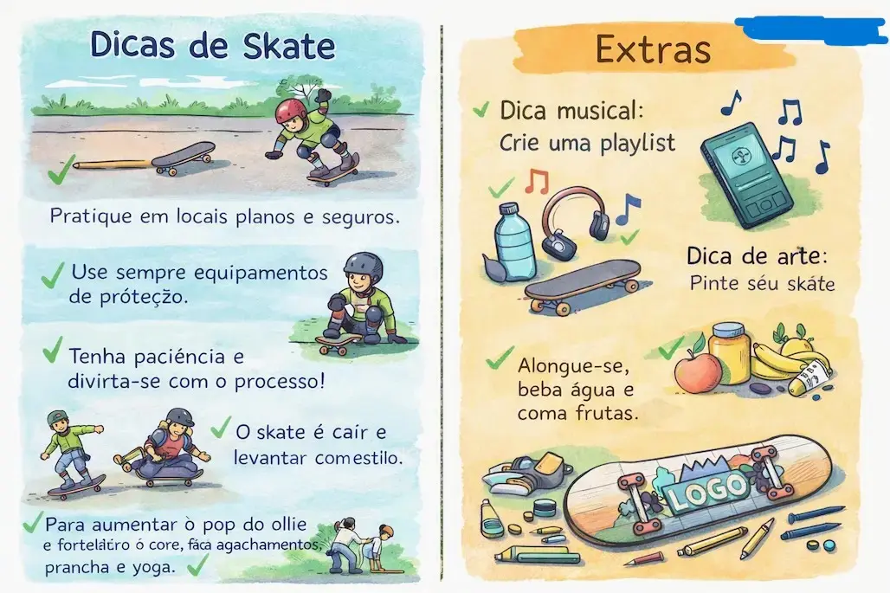

🛹 Entre no flow do skate e aprenda as manhas do rolê: equilíbrio, estilo e respeito pela pista. Marque o que você já domina e mantenha a mente aberta para o próximo trick.
Alimentação
Mantenha refeições leves antes do treino: carboidratos complexos e frutas para energia sustentada.
Descanso
Durma bem e respeite dias de descanso para recuperação muscular e segurança nas pistas.
Aquecimento
Antes de andar, aqueça as articulações e alongue levemente para reduzir o risco de lesões.
Consistência
Treine regularmente com pequenos objetivos — consistência é melhor que sessões longas esporádicas.
✅ Pratique em locais planos e seguros.
✅ Use sempre equipamentos de proteção (capacete, joelheiras e cotoveleiras).
✅ Tenha paciência e divirta-se com o processo.
✅ Aprenda a cair com segurança e a levantar com estilo.
✅ Para aumentar o pop do ollie (manobra de salto), faça agachamentos para ganhar explosão e treine o movimento separado do skate.
✅ Fortaleça o core com prancha e yoga para melhorar o equilíbrio.
✅ Alongue-se, hidrate-se e mantenha uma alimentação leve para render melhor.
🎵 Dica musical: monte uma playlist motivadora para seus treinos.
🔥 Dica de arte: desenhe seu próprio logo e personalize o shape no papel.